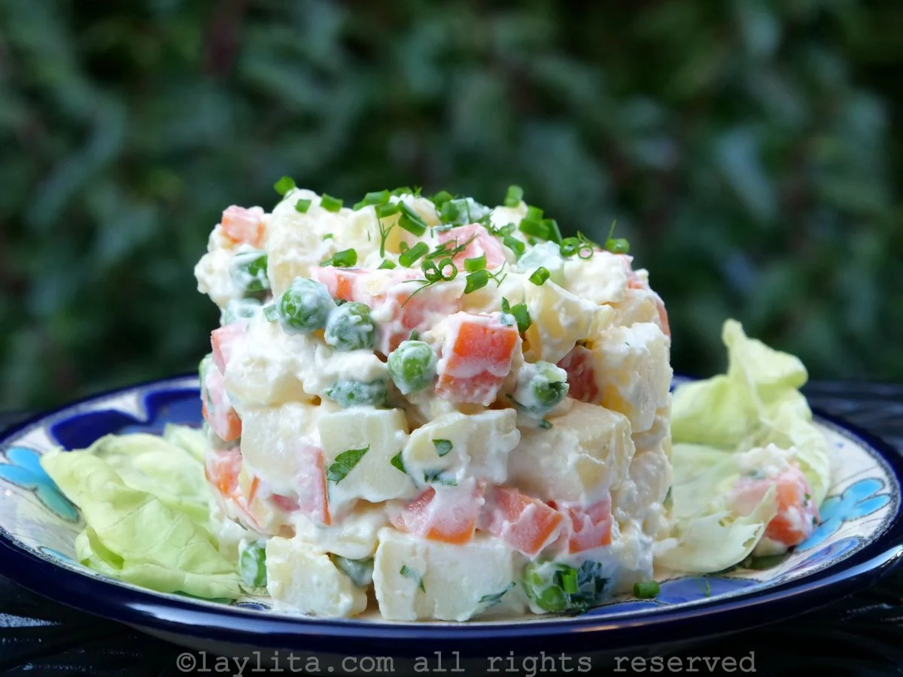

Receta de Ensalada Rusa de Doña Petrona

La ensalada rusa es considerada por muchos como el acompañamiento ideal para los platos principales de la época festiva.
Lista de ingredientes
- Arvejas y zanahorias.
- Chauchas y papas.
- Pepinitos en vinagre y mayonesa.
- Mostaza, sal y pimienta.
Lista de Pasos
- Cocinar por separado arvejas, zanahorias, chauchas y papas cortadas en daditos pequeños, luego escurrirlos y secarlos sobre un repasador.
- Mezclar en un recipiente hondo con pepinitos en vinagre picado, mayonesa, mostaza, sal y pimienta.
- Por último, para la presentación, se puede añadir huevo duro, jamón o manzana ácida picados.
¿Quién es Doña Petrona?
Leer Receta Vitel Toné
Página de Referencia
Volver al Inicio